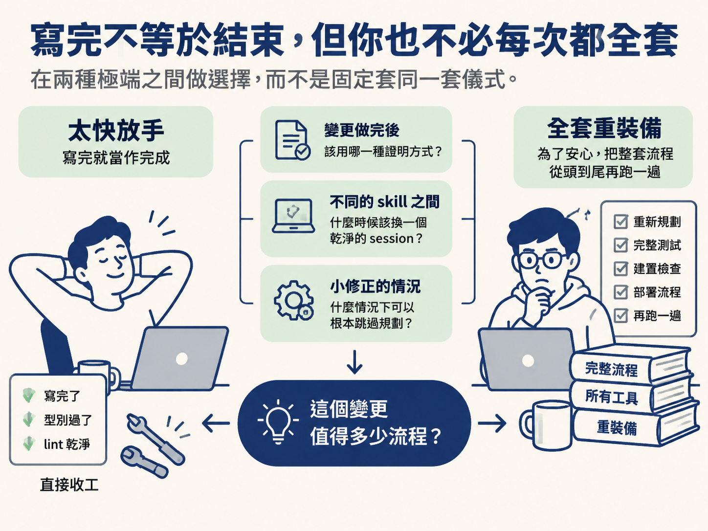
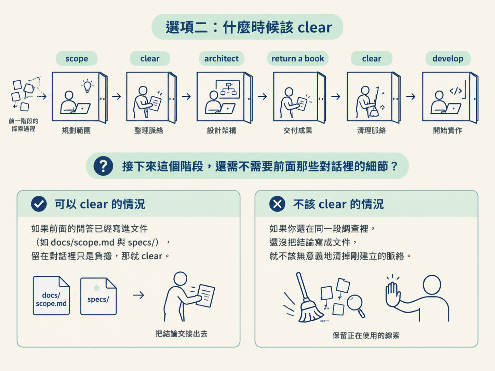
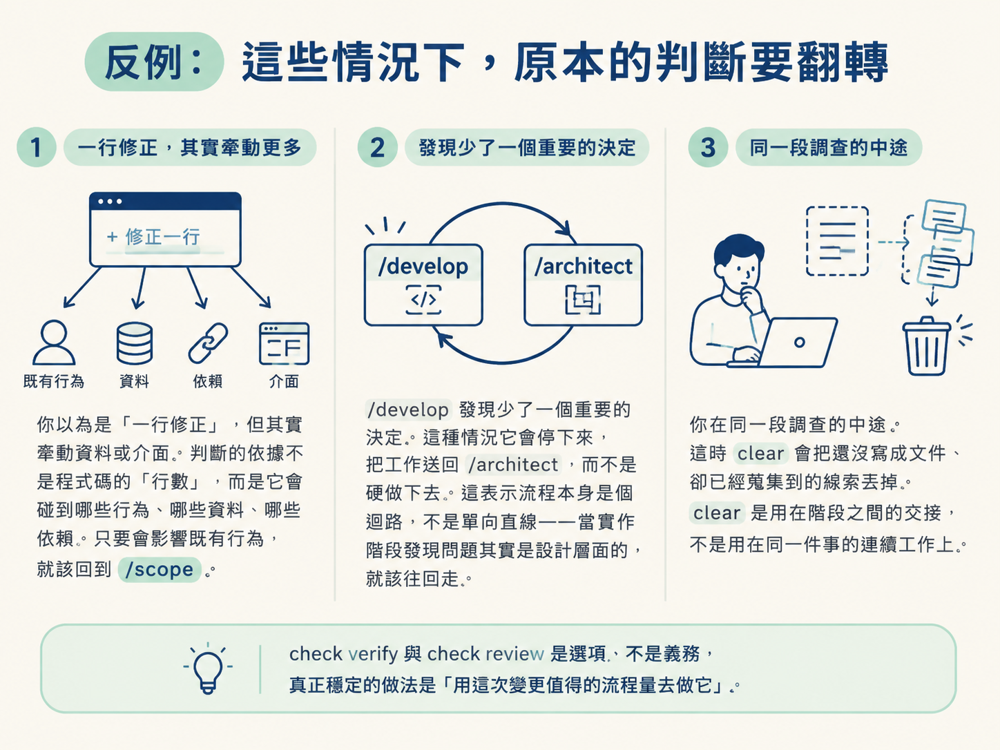

在舊碼庫的變更收尾時決定用 check verify 還是 check review、判斷何時該在 skill 之間 clear、以及什麼情況下一個小修正可以跳過 /scope 直接進 /develop。
上一節交出了一個 migration-free、只動四個檔案的還書功能。工程師在這種時刻最常犯兩種錯：一種是覺得「寫完了、型別過了、lint 乾淨」就當作完成，直接收工；另一種相反，為了安心，把整套流程從頭到尾再跑一遍，連一行小修正都動用完整重裝備。這一節要處理的，就是在這兩種極端之間做選擇。
你要決定三件事：變更做完後，該用哪一種證明方式；不同的 skill 之間，什麼時候該換一個乾淨的 session；以及什麼情況下，一個小修正可以根本跳過規劃。三件事背後其實是同一個問題——這個變更值得多少流程？

先看收尾的兩種證明方式。/develop 結束時會提議幫你驗證，於是你會面對 check verify 與 check review 兩個選項。它們回答的是不同的問題，可以這樣並排比較：
| check verify | check review | |
|---|---|---|
| 它回答的問題 | 這個功能今天真的能跑嗎？ | 有沒有我自己看不到的問題？ |
| 怎麼做 | 打開 app，對著驗收條件逐條測 | 把變更交給另一顆模型，取得第二個視角 |
| 你得到什麼 | 每條條件是通過、未達還是被擋住的證據 | 一個獨立視角的意見，補上你漏看的地方 |
| 什麼時候選它 | 你需要「它真的會動」的第一手證據 | 你想要有人幫你從另一個角度看這次改動 |
兩者不互相取代，因為它們證明的是不同的事。示範者最後把兩個選項都留著，讓你在真的需要時再跑。如果你的時間有限，先跑 check verify，因為它直接回答最根本的問題；如果你對這次改動心裡有點不確定，再補一顆 check review。
第二個決定是 session 的節奏。示範裡每個階段之間都放了 clear：scope 之後 clean 一次，再 architect；architect 之後再 clear 一次，才 develop。這樣做的用意，是讓每個階段都在自己的脈絡裡工作，而不是把前一階段的探索過程一路背進下一階段。
scope clear architect return a book clear develop
判別的方式是問自己：接下來這個階段，還需不需要前面那些對話裡的細節？ 如果你正從規劃跨到實作，前面的問答大多已經被寫進 docs/scope.md 與 specs/，留在對話裡只是負擔，那就 clear；但如果你還在同一段調查裡、還沒把結論寫成文件，就不該無意義地清掉剛建立的脈絡。

第三個決定牽涉你是否需要先規劃。/scope 存在的意義，是替一個值得規劃的功能建立追蹤用的 roadmap。所以判準很直接：
/scope，直接進 /develop。這正是示範者說的：這種情況你 normally 會直接走 develop。/scope 開始，因為它值得一份被追蹤的規劃。示範裡的還書功能，就是個「值得先規劃」的例子——它不是一行修正，而是一個要接進好幾個既有零件的流程，所以先 scope、再 architect、最後才 develop。
上面三組判準都有它們會失準的時候，值得先想清楚：
/scope。/develop 發現少了一個重要的決定。 這種情況它會停下來，把工作送回 /architect，而不是硬做下去。這表示流程本身是個迴路，不是單向直線——當實作階段發現問題其實是設計層面的，就該往回走。
反過來看，也不必把 check verify 和 check review 當成每次都要跑的一組。它是選項，不是義務。真正穩定的做法是一句話：用你這次變更值得的流程量去做它。
clear。/scope 直接 /develop；較大的功能一律從 /scope 開始。/develop 發現缺了重要決定，讓它把工作送回 /architect。走到這裡，這個節點也就完整了：你在一個陌生、別人寫的、正在被使用的專案上，先建地圖、驗證地圖，再用最小的安全變更交出一刀，並且知道怎麼收尾。把整條路連起來看，scope 用 repo 的地圖規劃工作，architect 讀現況後選定變更落點，develop 跟著既有模式只改規格要求的部分——這三個 skill 和你在新專案上用的一模一樣，差別只在於它們沒有一個是從想像出發的，而是從既有的地圖、程式碼、依賴與行為出發。這就是「在成熟系統裡幫助 agent」和「讓 agent 一路猜」之間的分野。
收尾時，
check verify回答「這個功能今天能不能跑」，方法是打開 app 對照驗收條件；check review給你另一顆模型的第二個視角，兩者證明不同的事、不互相取代。跨階段交接時，若前一階段的結論已寫進docs/scope.md與specs/，就在 skill 之間clear；尚在同一段調查中就不該 clear。單一小功能或一行修正可跳過/scope直接/develop，較大功能一律從/scope開始；若/develop發現缺了重要決定，它會把工作送回/architect。貫穿全部的原則只有一句：用這次變更值得的流程量去做它。